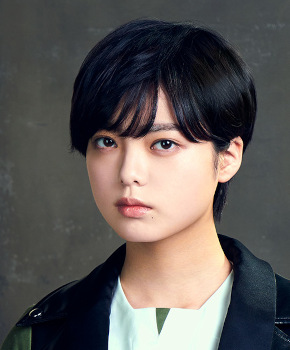

平手友梨奈ひらてゆりな

黒い羊（2019年）・最新
欅坂46 1期生 ・ 卒業・活動終了
センター曲：23曲（シングル表題曲センター：8曲） フォーメーション/歌唱参加：33曲
ライブ記録：センター 25公演・出演記録のある公演 63公演
ブログ記事：109件
学年：2001年度（同級生 全17人を見る）
フォーメーション統計：登場 25曲・フロント（1列目）25曲
よく隣になるメンバー：鈴本美愉（8回）、今泉佑唯（5回）、渡邉理佐（5回）
センター曲
サイレントマジョリティー、手を繋いで帰ろうか、キミガイナイ、世界には愛しかない、語るなら未来を…、二人セゾン、大人は信じてくれない、制服と太陽、誰のことを一番 愛してる？、不協和音、エキセントリック、月曜日の朝、スカートを切られた、君をもう探さない、危なっかしい計画、風に吹かれても、避雷針、ガラスを割れ！、もう森へ帰ろうか？、アンビバレント、Student Dance、I'm out、黒い羊、Nobody
推しに登録すると、トップページに「推しの新着」（最新のブログ）が出ます。
歴代アー写など（11枚）
タップすると上の写真が切り替わります。上の写真をタップすると最新のアー写に戻ります。